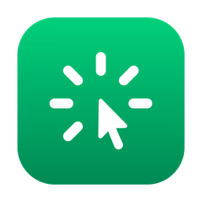
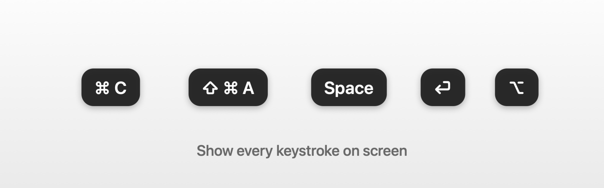
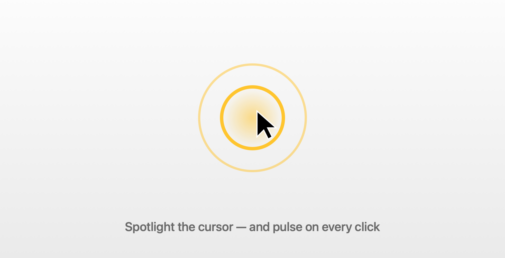
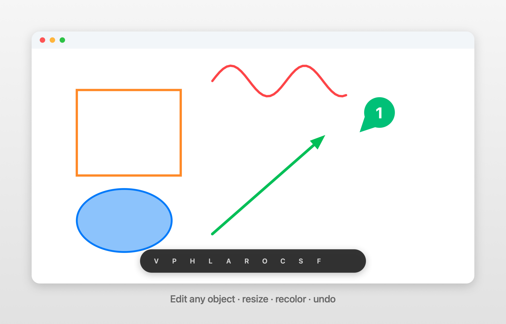

⌨️ Show your keystrokes
Every key and shortcut appears in clean on-screen capsules. Combos collapse into one, bare modifier taps show on their own, and passwords are never captured.

Keystrokes · Cursor highlight · Screen annotation
A lightweight macOS menu-bar tool for demos, tutorials & screen recordings.
⬇ Download for macOSEvery key and shortcut appears in clean on-screen capsules. Combos collapse into one, bare modifier taps show on their own, and passwords are never captured.

A smooth halo follows your pointer across every display and pulses on each click. Pick a disc, ring, squircle or rhombus — your color, size and opacity.

Draw with pen, highlighter, line, arrow, rectangle, ellipse, counter and spotlight. Every object is editable — select, move, resize, recolor, undo or delete.

Double-tap ⌃ Control to toggle the cursor highlight and keystrokes together, triple-tap it to start annotating. Each tool has a one-key shortcut while you draw.